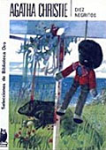
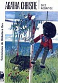

En inglés. Un artículo de Neuhaus, the First Things
sobre Kierkegaard. Está bien. Y viene bien acá, ya que lo citamos
hace poco; y también porque la cita del comienzo viene a cuento de la hipérbole, que decíamos ayer y que retomaremos mañana.
Y encima trae varias referencias librescas caras a este blog: Flannery O’Connor y Salinger (Holden Caulfield), por ejemplo.
Archivo por meses: octubre 2004
Las perlas y los chanchos
Un cristiano —uno mismo, sin ir más lejos—se
siente ofendido en su religión (o su religiosidad)
por algo que pasa en el mundo.
Algo como «La última tentación de Cristo«, pongamos, como un ejemplo a mano entre mil [*].
Y se indigna; se duele; se enardece.
Tal vez, pienso ahora, esto sea una especie de pecado -un tropiezo en el camino-. Y acaso podría aplicársele -estirando un poco la cosa- aquello de tirar perlas a los chanchos.
Y no estoy pensando en el fervor que se derrama sobre la película, sino más bien en la religiosidad que se invierte en alimentar ese fervor.
* Quizás hubiera sido preferible tomar un ejemplo en que la indignación sea más justificada. No estoy seguro, y no quiero darle más vueltas, porque voy a enturbiar más aún el asunto.
Algo como «La última tentación de Cristo«, pongamos, como un ejemplo a mano entre mil [*].
Y se indigna; se duele; se enardece.
Tal vez, pienso ahora, esto sea una especie de pecado -un tropiezo en el camino-. Y acaso podría aplicársele -estirando un poco la cosa- aquello de tirar perlas a los chanchos.
Y no estoy pensando en el fervor que se derrama sobre la película, sino más bien en la religiosidad que se invierte en alimentar ese fervor.
* Quizás hubiera sido preferible tomar un ejemplo en que la indignación sea más justificada. No estoy seguro, y no quiero darle más vueltas, porque voy a enturbiar más aún el asunto.
Discutible mejoría – 3
Algunas contribuciones, sin editar ni comentar, por ahora al menos.
Han dicho lo suyo en sus repectivos blogs: Eduardo de ens, mi tocayo de verso converso y Juan Ignacio.
Y también :
… Seguir leyendo
Han dicho lo suyo en sus repectivos blogs: Eduardo de ens, mi tocayo de verso converso y Juan Ignacio.
Y también :
… Seguir leyendo
Librepensadores
Ultimo momento (o últimos tiempos?):
Y a veces no.
El presidente designado de la Comisión Europea, el portugués José Manuel Barroso, retiró el miércoles los 24 postulados para integrar su equipo ejecutivo de la consideración del Parlamento Europeo al comprender que sería rechazado.
El equipo de Barroso estaba condenado, casi con seguridad, a un humillante rechazo debido a la oposición de los legisladores al italiano Rocco Buttiglione, postulado para comisionado de Justicia y quien había participado en el gabinete derechista del primer ministro Silvio Berlusconi y había expresado opiniones conservadoras sobre los homosexuales, las mujeres y el matrimonio, como por ejemplo que las mujeres deberían estar casadas.
A veces la frase de Chesterton (como muchas de sus argumentaciones) «Sólo la Iglesia Católica puede salvar al hombre de la humillante esclavitud de ser un
hijo de su tiempo« me suena un poco demasiado apologética, o militante, o autocomplaciente… El equipo de Barroso estaba condenado, casi con seguridad, a un humillante rechazo debido a la oposición de los legisladores al italiano Rocco Buttiglione, postulado para comisionado de Justicia y quien había participado en el gabinete derechista del primer ministro Silvio Berlusconi y había expresado opiniones conservadoras sobre los homosexuales, las mujeres y el matrimonio, como por ejemplo que las mujeres deberían estar casadas.
Y a veces no.
Discutible mejoría – 2
Sobre el tema de las consecuencias históricas del cristianismo, me han
llegado varios mensaje, que tal vez después recopilaré. Por ahora, puede decirnos algo esto de Kierkegaard:
Por otro lado, Ignacio me menta «El hombre eterno«, de Chesterton, en el cual el inglés católico diría (si me permiten por una vez usar el potencial de los periodistas) algo bastante distinto a estos, y más bien en la línea del «argumento 3» del post pasado. ¿Será así?
Veremos, veremos, qué sé yo… (quién me manda a mí a meterme acá!…).
… que Dios haya vivido aquí en la tierra como un hombre particular, es infinitamente admirable. Aunque esto no haya tenido ninguna consecuencia, es lo mismo; permanece tan admirable, infinitamente admirable, infinitamente más admirable que todas las consecuencias.
Intenta ahora resaltar la admirabilidad en otro sitio y podrás ver fácilmente lo demente : ¿Qué tendría de admirable que la vida de Dios haya tenido consecuencias admirables? Hablar de este modo es delirar. […]
…¡notable! Se pretende, con ayuda de la historia, con la consideración de las consecuencias de su vida, alcanzar concluyente aquel ergo : «ergo era Dios», mientras la fe hace cabalmente la afirmación contraria: que , en general, quien comienza con este silogismo, comienza con una blasfemia. […]
…»La historia», dice la fe, no tiene nada que hacer con Jesucristo; con relación a El solamente se posee la historia sagrada (la cual es cualitativamente distinta de la historia en general), que relata el palmarés de su vida en la situación de la humillación y que, a la par, El dijo ser Dios.
El es la paradoja, que la historia jamás podrá condimentar o transmutar en un silogismo corriente. El es en su humillación el mismo que en su elevación – pero los 1800 años, y aunque se convirtieran en 18000, no tienen nada que hacer en ello. Las brillantes consecuencias de la historia mundial, que casi llegan a convencer -incluso a un profesor de historia- de que El era Dios, no son de ninguna manera, a pesar de lo brillantes, su vuelta en majestad. Sin embargo, esta es la opinìón corriente; lo cual demuestra que se está haciendo de Cristo un hombre, cuya «vuelta en majestad» no sería otra cosa que las consecuencias de su vida en la historia -cuando la vuelta de Cristo en majestad es algo totalmente distinto de eso, es algo que se cree.
Y también esto, en la prosa menos intrincada pero no menos
potente de Simone Weil:
Intenta ahora resaltar la admirabilidad en otro sitio y podrás ver fácilmente lo demente : ¿Qué tendría de admirable que la vida de Dios haya tenido consecuencias admirables? Hablar de este modo es delirar. […]
…¡notable! Se pretende, con ayuda de la historia, con la consideración de las consecuencias de su vida, alcanzar concluyente aquel ergo : «ergo era Dios», mientras la fe hace cabalmente la afirmación contraria: que , en general, quien comienza con este silogismo, comienza con una blasfemia. […]
…»La historia», dice la fe, no tiene nada que hacer con Jesucristo; con relación a El solamente se posee la historia sagrada (la cual es cualitativamente distinta de la historia en general), que relata el palmarés de su vida en la situación de la humillación y que, a la par, El dijo ser Dios.
El es la paradoja, que la historia jamás podrá condimentar o transmutar en un silogismo corriente. El es en su humillación el mismo que en su elevación – pero los 1800 años, y aunque se convirtieran en 18000, no tienen nada que hacer en ello. Las brillantes consecuencias de la historia mundial, que casi llegan a convencer -incluso a un profesor de historia- de que El era Dios, no son de ninguna manera, a pesar de lo brillantes, su vuelta en majestad. Sin embargo, esta es la opinìón corriente; lo cual demuestra que se está haciendo de Cristo un hombre, cuya «vuelta en majestad» no sería otra cosa que las consecuencias de su vida en la historia -cuando la vuelta de Cristo en majestad es algo totalmente distinto de eso, es algo que se cree.
Puede afirmarse sin temor a exagerar que hoy el espíritu de verdad está casi ausente de la vida religiosa.
Esto se echa de ver, entre otras cosas, por la naturaleza de los argumentos aportados en favor del cristianismo. Algunos de ellos son del tipo de la publicidad de las pastillas Pink. Así ocurre con Bergson y con todo lo que se inspira en él. La fe aparece en Bergson como una pastilla Pink de tipo superior, que proporciona un grado prodigioso de vitalidad.
Lo mismo ocurre con la argumentación histórica.
Consiste en decir: «¡Vean qué mediocres eran los hombres antes de Cristo! Vino Cristo, y ya veis que los hombres, pese a sus debilidades, han sido luego en su conjunto algo bueno».
Esto es absolutamente contrario a la verdad. Pero, aunque fuera verdadero, en todo caso es llevar la apologética al nivel de los anuncios de especialidades farmacéuticas que muestran al enfermo antes y después. Eso es medir la eficacia de la Pasión de Cristo -que si no es ficticia es necesariamente infinita– según una consecuencia histórica, temporal y humana que, aunque fuera real –lo que no es el caso-, sería algo necesariamente finito.
Simone Weil
Bastante en común, ¿no?. Veremos, veremos. Esto se echa de ver, entre otras cosas, por la naturaleza de los argumentos aportados en favor del cristianismo. Algunos de ellos son del tipo de la publicidad de las pastillas Pink. Así ocurre con Bergson y con todo lo que se inspira en él. La fe aparece en Bergson como una pastilla Pink de tipo superior, que proporciona un grado prodigioso de vitalidad.
Lo mismo ocurre con la argumentación histórica.
Consiste en decir: «¡Vean qué mediocres eran los hombres antes de Cristo! Vino Cristo, y ya veis que los hombres, pese a sus debilidades, han sido luego en su conjunto algo bueno».
Esto es absolutamente contrario a la verdad. Pero, aunque fuera verdadero, en todo caso es llevar la apologética al nivel de los anuncios de especialidades farmacéuticas que muestran al enfermo antes y después. Eso es medir la eficacia de la Pasión de Cristo -que si no es ficticia es necesariamente infinita– según una consecuencia histórica, temporal y humana que, aunque fuera real –lo que no es el caso-, sería algo necesariamente finito.
Simone Weil
Por otro lado, Ignacio me menta «El hombre eterno«, de Chesterton, en el cual el inglés católico diría (si me permiten por una vez usar el potencial de los periodistas) algo bastante distinto a estos, y más bien en la línea del «argumento 3» del post pasado. ¿Será así?
Veremos, veremos, qué sé yo… (quién me manda a mí a meterme acá!…).
Monjas bon vivants
Un blog de monjas dominicas.
En inglés, lamentablemente.
Sobre el domingo:
Sobre el domingo:
En el monasterio no existe la noción del «fin de semana»,
-lo cual resulta un poco duro para las jóvenes al principio-…
Pero sí existe el Domingo! Es un día lleno de sacralidad y de alegría, un día muy amado por todas las hermanas … un día especialmente dedicado al Amado, en silencio y alegría. Salvo para las hermanas en la cocina (que se rotan cada domingo), es tiempo para leer, echar una siestita o caminar en el jardín, y para rezos extra: sea en el Coro, o en la celda propia, o al aire libre.
Es un día simplemente «para ser».
Las comidas son sencillas pero especiales; y hay una especie de ley que parece universal en los monasterios: el domingo a la noche, helado (aun en Cuaresma!).
«Sabés que no aprendí a vivir…«, cantaba Charly García.
Y supongo que todos podríamos decir lo mismo. O casi todos.
Pero sí existe el Domingo! Es un día lleno de sacralidad y de alegría, un día muy amado por todas las hermanas … un día especialmente dedicado al Amado, en silencio y alegría. Salvo para las hermanas en la cocina (que se rotan cada domingo), es tiempo para leer, echar una siestita o caminar en el jardín, y para rezos extra: sea en el Coro, o en la celda propia, o al aire libre.
Es un día simplemente «para ser».
Las comidas son sencillas pero especiales; y hay una especie de ley que parece universal en los monasterios: el domingo a la noche, helado (aun en Cuaresma!).
Cooperando con la buena doctrina
… Todo su mandato [de Bush] ha girado alrededor de su fe, de su seguridad y de sus creencias.
No es algo menor: los hechos concretos, la información y el análisis pasan a ser detalles prácticamente irrelevantes a la hora de tomar decisiones porque, en cuestiones de fe, se cree o no se cree, no se necesita ninguna evidencia empírica.
Esta perla intelectual la perpetró hoy Paula Lugones,
de Clarín
(vieja conocida nuestra; buscándola en Google aparece en primer lugar esto).Bien. Los lectores de Clarín ya saben bien que Bush es malo/tonto y que Bush es religioso, y la ayuda que les da Paula para completar el agradable silogismo que arranca con tales premisas seguramente no era muy necesaria : a la conclusión se llega por muchos otros caminos.
Igual, el razonamiento no deja de ser notable: si sos religioso, tenés fe: si tenés fe, la realidad empírica (o sea, la única) te es ajena.
Más adelante, Paula se lamenta de que Kerry -quien, a pesar de ser católico, intentó ser cuerdo («había comenzado su campaña con un perfil bajo sobre el tema, ya que considera que la religión no debe mezclarse con la política»)- al final se haya tenido que adaptar a un electorado … difícil («un país donde 60% de los habitantes dice que la religión es muy importante para su vida y un tercio va a misa al menos una vez a la semana«). Además:
… El demócrata, que usa en su cuello un pequeño crucifijo, viene soportando fuertes embates desde el propio seno del catolicismo. Un grupo de obispos llamó a votar contra Kerry dadas sus posturas a favor del aborto, el matrimonio gay y la investigación con células madre. Si lo votan, dijo el Arzobispo Charles Chaput, «están cooperando con el Diablo».
Es de imaginar que con esta última cita Paula se gana cómodamente la adhesión
de sus Y es de imaginar que sería inútil pedirle la fuente del dicho del arzobispo. Cuando uno está dispuesto a creer, «no se necesita ninguna evidencia empírica»; y «los hechos concretos, la información y el análisis pasan a ser detalles prácticamente irrelevantes».
(Para los escéticos, pues, la página del arzobispado, la trascripción del reportaje en cuestión, la versión del NYTimes y un comentario.)
Agatha Christie y los estereotipos
Compré el otro día, un libro de Agatha Christie,
al azar, entre varios de una mesa de usados.
«Pasajero para Francfort» —según vi después—
es de sus últimos años, y es considerado uno de los más flojos. Y con justicia.
Mala suerte. Es que quería refrescar mis tiempos preadolescentes: después de Julio Verne, los libros de Agatha Christie fueron de mis primeros placeres librescos. Y hoy -aunque desde entonces la he releído muy poco- me sigue cayendo bien, a diferencia de tantas otras devociones pasadas. Una mujer con buen gusto y buen sentido, me parece.
Leo en algún lado una crítica que objeta los estereotipos (victorianos, quizás) de sus novelas. Personajes de ciertas nacionalidades (o razas o capas sociales) tienden a tener siempre determinadas disposiciones de carácter o intelecto… Y esto, ya se sabe, molesta sobremanera a nuestros críticos modernos con ínfulas de maestros sabios (con perdón del estereotipo).
Por mi parte: si los estereotipos (sobre todo cuando no surgen de la observación sino de la pereza mental) pueden molestarme, más me molestan estos críticos, qué quieren que les diga.
Hay un punto en que la guerra al estereotipo no es más que imbecilidad y desamor.
 Habría mucho más que decir sobre esto —y es una lástima que Chesterton no lo haya hecho… si es que no lo hizo—. Quizás otro día [*]… quizá partiendo de esto…
Hablando de policías políticamente correctos: me entero ahora de que una de sus novelas más memorables, «Los diez negritos» («Ten little niggers«, de una rima tradicional infantil), tuvo que cambiar de nombre en posteriores reediciones («And then there was none«).
Espero que algún día se haga una antología de estas tonterías, para diversión (…espero!) de nuestros nietos.
* Consejos vendo y para mí no tengo: el blogger que, terminando un post, sienta que tiene algo más para escribir y que piensa hacerlo acaso más adelante, hará bien en no decirlo: esas promesas vagas («más sobre esto más adelante») están de más y generan fastidio.
Mala suerte. Es que quería refrescar mis tiempos preadolescentes: después de Julio Verne, los libros de Agatha Christie fueron de mis primeros placeres librescos. Y hoy -aunque desde entonces la he releído muy poco- me sigue cayendo bien, a diferencia de tantas otras devociones pasadas. Una mujer con buen gusto y buen sentido, me parece.
Leo en algún lado una crítica que objeta los estereotipos (victorianos, quizás) de sus novelas. Personajes de ciertas nacionalidades (o razas o capas sociales) tienden a tener siempre determinadas disposiciones de carácter o intelecto… Y esto, ya se sabe, molesta sobremanera a nuestros críticos modernos con ínfulas de maestros sabios (con perdón del estereotipo).
Por mi parte: si los estereotipos (sobre todo cuando no surgen de la observación sino de la pereza mental) pueden molestarme, más me molestan estos críticos, qué quieren que les diga.
Hay un punto en que la guerra al estereotipo no es más que imbecilidad y desamor.
 Habría mucho más que decir sobre esto —y es una lástima que Chesterton no lo haya hecho… si es que no lo hizo—. Quizás otro día [*]… quizá partiendo de esto…
Hablando de policías políticamente correctos: me entero ahora de que una de sus novelas más memorables, «Los diez negritos» («Ten little niggers«, de una rima tradicional infantil), tuvo que cambiar de nombre en posteriores reediciones («And then there was none«).
Espero que algún día se haga una antología de estas tonterías, para diversión (…espero!) de nuestros nietos.
* Consejos vendo y para mí no tengo: el blogger que, terminando un post, sienta que tiene algo más para escribir y que piensa hacerlo acaso más adelante, hará bien en no decirlo: esas promesas vagas («más sobre esto más adelante») están de más y generan fastidio.
Buscando busco
Hace rato vengo dando vueltas con el tema de los buscadores,
y por fin me decidí (por el htDig). Mucho más flexible
y poderoso de lo que creía.
Todavía me falta tocar algunas cositas, por lo que no lo agregué a esta página. Pero si van a la página principal del sitio ( www.hjg.com.ar ) encontrarán buscadores acotados a distintas secciones -por ahora, hay uno acotado a la Suma, otro a la Concordia y otro a todo el resto.
El de la Suma, sobre todo, me parece el más util por ahora…
Todavía me falta tocar algunas cositas, por lo que no lo agregué a esta página. Pero si van a la página principal del sitio ( www.hjg.com.ar ) encontrarán buscadores acotados a distintas secciones -por ahora, hay uno acotado a la Suma, otro a la Concordia y otro a todo el resto.
El de la Suma, sobre todo, me parece el más util por ahora…
Discutible mejoría
Me pregunta alguien si el cristianismo
ha traído alguna mejoría a la humanidad.
Si el hombre ha sido mejor —en algún sentido: más bueno, más feliz, más sabio, más santo— después de la venida de Cristo que antes.
… Seguir leyendo
Si el hombre ha sido mejor —en algún sentido: más bueno, más feliz, más sabio, más santo— después de la venida de Cristo que antes.
… Seguir leyendo
Invisible
Nos vamos poniendo tecnos:
Me han preguntado un par de lectores con blog cómo se hace para meter en HTML un texto que pueda ocultarse y mostrarse apretando un link, como yo hago en varios posts largos. La mayoría de las veces, en mi blog y los otros, eso lo provee el motor (Movable Type, Blogger con limitaciones, Nucleus, WordPress): generalmente el texto que uno mete como «texto extendido» (o algo así), automáticamente aparece en la página como texto oculto.
Pero, para los que no pueden o no quieren usar esta funcionalidad, (y quieren quizás ocultar partes arbitrarias del texto), les paso un cacho de código Javascript que hice. Es para cualquier página html —independientemente del sistema de blog— y que creo que funciona bien [*] en cualquier navegador más o menos moderno.
[*] Actualizado: Más o menos bien: agego algunos trucos para Blogger y otros… … Seguir leyendo
Me han preguntado un par de lectores con blog cómo se hace para meter en HTML un texto que pueda ocultarse y mostrarse apretando un link, como yo hago en varios posts largos. La mayoría de las veces, en mi blog y los otros, eso lo provee el motor (Movable Type, Blogger con limitaciones, Nucleus, WordPress): generalmente el texto que uno mete como «texto extendido» (o algo así), automáticamente aparece en la página como texto oculto.
Pero, para los que no pueden o no quieren usar esta funcionalidad, (y quieren quizás ocultar partes arbitrarias del texto), les paso un cacho de código Javascript que hice. Es para cualquier página html —independientemente del sistema de blog— y que creo que funciona bien [*] en cualquier navegador más o menos moderno.
[*] Actualizado: Más o menos bien: agego algunos trucos para Blogger y otros… … Seguir leyendo
Falconetti en Buenos Aires
Un poco de casualidad, encontré algunos datos
sobre Reneé María Falconetti, la actriz de «La pasión de Juana de Arco«.
Es considerada una de las mejores actuaciones del cine mudo, por lo que veo; y -parece que por exigencias
del director- fue su primer y último papel en el cine grande.
A fines de la segunda guerra mundial, emigró de Suiza a la Argentina; buscando quien sabe qué.
Y murió acá mismito, en mi Buenos Aires querido, en diciembre de 1946.
Hay una película de un argentino afrancesado sobre esta emigración o exilio; y sobre otro más (Le Vigan, un actor francés acusado de colaboracionista).
Me gustaría saber —vana curiosidad— con qué ojos habrá mirado esta francesa, con tan poco pasado (y tan poco futuro) en esta tierra, aquel 17 de octubre.
P.S.: Sonará algo difícil de creer, pero este post -que tenía en mis borradores hace unos cuantos días- lo terminé de escribir y publicar recién, antes de advertir la fecha de hoy.
A fines de la segunda guerra mundial, emigró de Suiza a la Argentina; buscando quien sabe qué.
Y murió acá mismito, en mi Buenos Aires querido, en diciembre de 1946.
Hay una película de un argentino afrancesado sobre esta emigración o exilio; y sobre otro más (Le Vigan, un actor francés acusado de colaboracionista).
Me gustaría saber —vana curiosidad— con qué ojos habrá mirado esta francesa, con tan poco pasado (y tan poco futuro) en esta tierra, aquel 17 de octubre.
P.S.: Sonará algo difícil de creer, pero este post -que tenía en mis borradores hace unos cuantos días- lo terminé de escribir y publicar recién, antes de advertir la fecha de hoy.
El o ella
Teresa / sin ripios / se expresa
No se trata de literatura, pero…
Hoy es la fiesta de Santa Teresa de Jesús.
Contra esos, el mismo Fray Luis ya se enojaba:
Hoy es la fiesta de Santa Teresa de Jesús.
Ya habéis visto, hijas, que se han pasado algunos trabajos, aunque creo son los menos los que he escrito; porque si se hubieran de decir por menudo, era gran cansancio, así de los caminos, con aguas y nieves y con perderlos, y sobre todo muchas veces con tan poca salud, que alguna me acaeció no sé si lo he dicho que era en la primera jornada que salimos de Malagón para Beas, que iba con calentura y tantos males juntos, que me acaeció, mirando lo que tenía por andar y viéndome así, acordarme de nuestro Padre Elías, cuando iba huyendo de Jezabel y decir: «Señor, ¿cómo tengo yo de poder sufrir esto? ¡Miradlo Vos!» […]
Pues en llevar condiciones de muchas personas, que era menester en cada pueblo, no se trabajaba poco. Y en dejar las hijas y hermanas mías cuando me iba de una parte a otra, yo os digo que, como yo las amo tanto, que no ha sido la más pequeña cruz, en especial cuando pensaba que no las había de tornar a ver y veía su gran sentimiento y lágrimas. Que aunque están de otras cosas desasidas, ésta no se lo ha dado Dios, por ventura para que me fuese a mí más tormento, que tampoco lo estoy de ellas, aunque me esforzaba todo lo que podía para no se lo mostrar, y las reñía; mas poco me aprovechaba, que es grande el amor que me tienen y bien se ve en muchas cosas ser verdadero. Santa Teresa – Fundaciones – cap. 25
Prosa descuidada, ligera; «desafeitada», decía Fray Luis; es decir, sin artificios. Por lo mismo, (virtud negativa, si quieren)
sin ripios. Teresa no iba a andar fijándose en no repetir una palabra, o en hacer frases
cortas: Pues en llevar condiciones de muchas personas, que era menester en cada pueblo, no se trabajaba poco. Y en dejar las hijas y hermanas mías cuando me iba de una parte a otra, yo os digo que, como yo las amo tanto, que no ha sido la más pequeña cruz, en especial cuando pensaba que no las había de tornar a ver y veía su gran sentimiento y lágrimas. Que aunque están de otras cosas desasidas, ésta no se lo ha dado Dios, por ventura para que me fuese a mí más tormento, que tampoco lo estoy de ellas, aunque me esforzaba todo lo que podía para no se lo mostrar, y las reñía; mas poco me aprovechaba, que es grande el amor que me tienen y bien se ve en muchas cosas ser verdadero. Santa Teresa – Fundaciones – cap. 25
…Téngase aviso que la flaqueza natural es muy flaca, en especial en las mujeres, y en este camino de oración se muestra más; y así es menester que a cada cosita que se nos antoje, no pensemos luego es cosa de visión; porque crean que cuando lo es, que se da bien a entender. Adonde hay algo de melancolía, es menester mucho más aviso; porque cosas han venido a mí, de estos antojos, que me han espantado cómo es posible que tan verdaderamente les parezca que ven lo que no ven.
Una vez vino a mí un confesor, muy admirado, que confesaba una persona, y decíale que venía muchos días nuestra Señora y se sentaba sobre su cama y estaba hablando más de una hora y diciendo cosas por venir y otras muchas.
Entre tantos desatinos, acertaba alguno, y con esto teníase por cierto.
Yo entendí luego lo que era, aunque no lo osé decir; porque estamos en un mundo que es menester pensar lo que pueden pensar de nosotros para que hayan efecto nuestras palabras; y así dije que se esperase aquellas profecías si eran verdad, y preguntase otros efectos y se informase de la vida de aquella persona. En fin, venido a entender, era todo desatino…
Santa Teresa – Fundaciones – cap. 8
Supongo que algún profesor de literatura se pondría a eliminar la repeticiones
(demasiados «es menester» … ¿la flaqueza muy flaca ? vamos! … «pensar
lo que pueden pensar» … …no, no …).
Una vez vino a mí un confesor, muy admirado, que confesaba una persona, y decíale que venía muchos días nuestra Señora y se sentaba sobre su cama y estaba hablando más de una hora y diciendo cosas por venir y otras muchas.
Entre tantos desatinos, acertaba alguno, y con esto teníase por cierto.
Yo entendí luego lo que era, aunque no lo osé decir; porque estamos en un mundo que es menester pensar lo que pueden pensar de nosotros para que hayan efecto nuestras palabras; y así dije que se esperase aquellas profecías si eran verdad, y preguntase otros efectos y se informase de la vida de aquella persona. En fin, venido a entender, era todo desatino…
Santa Teresa – Fundaciones – cap. 8
Contra esos, el mismo Fray Luis ya se enojaba:
…fue atrevimiento grandísimo y error muy feo querer enmendar las palabras, porque si entendieran bien el castellano vieran que el de la madre es la misma elegancia.
Pecados poéticos
De las letras de canciones que conozco, yo le daría el primer premio al ripio
a la palabra «sugerir» de Honrar la vida:
Hay mucha competencia, claro. De la misma canción, «Es una virtud, es dignidad / Y es la actitud de identidad /Mas definida» tiene lo suyo… Pero esto no es ripiosidad pura, acá hay otros pecados..
Y si hablamos de ripios combinados con pretensiones de grandeza y sentenciosidad «comprometida»… recuerdo (espero que la memoria no me traicione: Google no ha tenido el placer de encontrarlo …todavía) esta cuarteta de un gato de Carnota, «Pecado de juventud», cuyo ridículo me esforzaba en no ver, allá en mis años mozos:
Un «clásico del cancionero criollo más exquisito», dictamina Página 12, que de exquisiteces criollas la sabe lunga.
Permanecer y transcurrir /
No siempre quiere sugerir /
Honrar la vida
Hay mucha competencia, claro. De la misma canción, «Es una virtud, es dignidad / Y es la actitud de identidad /Mas definida» tiene lo suyo… Pero esto no es ripiosidad pura, acá hay otros pecados..
Y si hablamos de ripios combinados con pretensiones de grandeza y sentenciosidad «comprometida»… recuerdo (espero que la memoria no me traicione: Google no ha tenido el placer de encontrarlo …todavía) esta cuarteta de un gato de Carnota, «Pecado de juventud», cuyo ridículo me esforzaba en no ver, allá en mis años mozos:
Trabajo, que es la dignidad /
del hombre van mermando,
y así la solidaridad / de a poco van matando.
Nótese la rima dignidad-solidaridad (toda una garantía
de ortodoxia ideológica). Paladéese la fluidez sonora del tercer verso. E imagínese
la proeza poética de encontrar dos gerundios consonantes intercambiables.
y así la solidaridad / de a poco van matando.
Un «clásico del cancionero criollo más exquisito», dictamina Página 12, que de exquisiteces criollas la sabe lunga.
La pintura amarilla
Vamos con una pequeña fábula de Robert Luis Stevenson,
que viene como introducción de otro post (que vendrá mañana).
Sé muy poco sobre Stevenson, vida y obra; sólo leí «La isla del tesoro», y algún cuento suelto. Alguna vez lo menté, a propósito de «El diablo en la botella», y su relación con el padre Demian de Molokai ( cuando el cura de los leprosos (hoy beato) murió, surgieron unos cuantos «revisionistas» -protestantes en su mayoria- que lo atacaban (como surgieron cuando murió la madre Teresa de Calcuta), y Stevenson -que conocía el mundo de Molokai salió a defenderlo).
Stevenson estaba lejos de ser católico, de todas maneras; de formación calvinista, y juventud atea, parece que no pasó de ser un deísta liberal; aunque, al decir de Chesterton (que lo admiraba y defendía) no dejó de ser una especie de teólogo, en medio de una religión muerta (el calvinismo escocés del siglo XIX). Otros dicen que la cuestión es más complicada que eso. Yo no sé.
Pero la fábula que traigo acá, es una sátira; con su intención religiosa; o antireligiosa, si quieren (pero para afirmar que es «contra la Iglesia» ya hace falta demasiada …frivolidad). Yo la conozco por una mención de Ronald Knox, en «El torrente oculto«, que la califica como una de las más deprimentes de la serie.
Se llama «La pintura amarilla«; en inglés está acá. Un resumen para los que no lean inglés:
… Seguir leyendo
Sé muy poco sobre Stevenson, vida y obra; sólo leí «La isla del tesoro», y algún cuento suelto. Alguna vez lo menté, a propósito de «El diablo en la botella», y su relación con el padre Demian de Molokai ( cuando el cura de los leprosos (hoy beato) murió, surgieron unos cuantos «revisionistas» -protestantes en su mayoria- que lo atacaban (como surgieron cuando murió la madre Teresa de Calcuta), y Stevenson -que conocía el mundo de Molokai salió a defenderlo).
Stevenson estaba lejos de ser católico, de todas maneras; de formación calvinista, y juventud atea, parece que no pasó de ser un deísta liberal; aunque, al decir de Chesterton (que lo admiraba y defendía) no dejó de ser una especie de teólogo, en medio de una religión muerta (el calvinismo escocés del siglo XIX). Otros dicen que la cuestión es más complicada que eso. Yo no sé.
Pero la fábula que traigo acá, es una sátira; con su intención religiosa; o antireligiosa, si quieren (pero para afirmar que es «contra la Iglesia» ya hace falta demasiada …frivolidad). Yo la conozco por una mención de Ronald Knox, en «El torrente oculto«, que la califica como una de las más deprimentes de la serie.
Se llama «La pintura amarilla«; en inglés está acá. Un resumen para los que no lean inglés:
… Seguir leyendo
De vuelta al redil
Al final Google me levantó la excomunión, nomás (que se reflejaba
en el PageRank y en la falta de actualización del cache, pero no en
las búsquedas). La concordia y la Suma también habían
caído en la volteada, y también volvieron a la normalidad.
Ya que estamos promocionándonos, aprovecho: la Suma Teológica ha tenido algunos retoques en el código html y la estética. Sigo alentando a los interesados a que colaboren, sin miedo, a corregir las erratas desde la página.
Ya que estamos promocionándonos, aprovecho: la Suma Teológica ha tenido algunos retoques en el código html y la estética. Sigo alentando a los interesados a que colaboren, sin miedo, a corregir las erratas desde la página.
La última tentación ( 2 )
Algo más sobre «La última tentación… «.
Ya sé que en el ambiente católico no estoy muy acompañado en mi mirada … indulgente. Así, varios lectores me comentan que, buena o mala película, ellos no pueden ni quieren asistir a ciertas imágenes… que no es lícito hacer ciertas ficciones, y que también las imágenes puede hacernos daño -aún asumidas como ficción, o incluso ficción dentro de la ficción -como es el caso.
A propósito de esto último, una aclaración, para los que no la vieron. Un lector [*] (un sacerdote que leyó el libro de Kazantzakis) me pregunta si en la película se conserva el carácter imaginario que tiene toda la vida «post-tentación» de Jesús (bajada de la cruz, casamiento, hijos…). Sí.
Al final, Jesús «arrepentido» pide morir en la cruz… y la escena vuelve a la crucifixión, para morir pronunciando su «Todo está cumplido». Con lo cual quedaría claro (bueno, más o menos…) que todo es una especie de visión que el diablo le presenta a Jesús como tentación, pero que él en última instancia resiste.
Acá hay una crítica recomendable de un chileno, con un buen resumen del argumento. El chileno -creyente- enumera las virtudes y defectos de la película, todo con un raro equilibrio y buen sentido. En general, coincido; aunque él es -por un lado- más severo que yo al evaluar cuán ofensiva e hiriente resulta esta «manipulación» (yo tampoco usaría esta palabra) del evangelio. Pero por el otro lado -curiosamente- es más indulgente que yo al juzgar la catolicidad de la obra; tanto en la buena intención del autor, como en la ortodoxia («Desde la perspectiva de la ortodoxia cristiana, y más exactamente desde el catolicismo de Scorsese, no hay motivo de escándalo en la narración. En ningún instante se pone en duda la misteriosa dualidad de Jesús ni su condición de salvador del hombre»… «no reduce o anula la dimensión divina de Cristo«). Yo no diría tanto… pero de todas maneras tengo poquísima confianza en mi juicio en estas materias.
También acabo de encontrar (en inglés; en First Things, una publicación católica seria … y nada progresista) este artículo, que también trata de mirar con buenos ojos la película (y que también tiene que nadar un poco contra corriente…).
[*] El mismo cura me dice que le pareció un espanto («parece que ciertos grupos han perdido la noción del ridículo»… «no importa que algo sea un bodrio, o que estéticamente sea una verdadera bazofia, sólo importa que nos deje bien parados»… ) ese link que puse de «las películas más católicas de la historia». A mí también, aclaro, por las dudas…
Ya sé que en el ambiente católico no estoy muy acompañado en mi mirada … indulgente. Así, varios lectores me comentan que, buena o mala película, ellos no pueden ni quieren asistir a ciertas imágenes… que no es lícito hacer ciertas ficciones, y que también las imágenes puede hacernos daño -aún asumidas como ficción, o incluso ficción dentro de la ficción -como es el caso.
A propósito de esto último, una aclaración, para los que no la vieron. Un lector [*] (un sacerdote que leyó el libro de Kazantzakis) me pregunta si en la película se conserva el carácter imaginario que tiene toda la vida «post-tentación» de Jesús (bajada de la cruz, casamiento, hijos…). Sí.
Al final, Jesús «arrepentido» pide morir en la cruz… y la escena vuelve a la crucifixión, para morir pronunciando su «Todo está cumplido». Con lo cual quedaría claro (bueno, más o menos…) que todo es una especie de visión que el diablo le presenta a Jesús como tentación, pero que él en última instancia resiste.
Acá hay una crítica recomendable de un chileno, con un buen resumen del argumento. El chileno -creyente- enumera las virtudes y defectos de la película, todo con un raro equilibrio y buen sentido. En general, coincido; aunque él es -por un lado- más severo que yo al evaluar cuán ofensiva e hiriente resulta esta «manipulación» (yo tampoco usaría esta palabra) del evangelio. Pero por el otro lado -curiosamente- es más indulgente que yo al juzgar la catolicidad de la obra; tanto en la buena intención del autor, como en la ortodoxia («Desde la perspectiva de la ortodoxia cristiana, y más exactamente desde el catolicismo de Scorsese, no hay motivo de escándalo en la narración. En ningún instante se pone en duda la misteriosa dualidad de Jesús ni su condición de salvador del hombre»… «no reduce o anula la dimensión divina de Cristo«). Yo no diría tanto… pero de todas maneras tengo poquísima confianza en mi juicio en estas materias.
También acabo de encontrar (en inglés; en First Things, una publicación católica seria … y nada progresista) este artículo, que también trata de mirar con buenos ojos la película (y que también tiene que nadar un poco contra corriente…).
[En su momento] la película fue condenada por prácticamente todas
las denominaciones cristianas, aquí [EEUU] y en el extranjero;
sufrió protestas, boycots, violencias y amenazas de bombas,
y quedó fuera de los Blockbuster.
[…]Si bien es comprensible la oposición, creo en muchos sentidos está equivocada. El hecho de que La Ultima Tentación de Cristo se haya constituido en un ejemplo emblemático de degradación cultural, debería preocupar a todos los que quieren preservar el poder del arte para comprometer la imaginación moral. El conservadurismo cultural terminará dañándose a sí mismo si no aprende a distinguir entre los esfuerzos emprendidos con seriedad, dentro de los límites legítimos de la libertad artística, y los panfletos de mala fe.
[…] La concepción general y la realización es tan sugerente, que podemos disculpar a Kazantzakis por los excesos de su novela, y a Scorsese las fallas de su film. Asombra encontrar en esta época de auto-afirmación y avaricia espiritual, de interminables reclamos de derechos y beneficios, una presentación tan clara de la noción de auto-sacrificio, sin disculpas, sin condescendencias y sin psicologismos abaratadores…
El artículo tuvo un recibimiento dispar, según se ve en las cartas de lectores.
[…]Si bien es comprensible la oposición, creo en muchos sentidos está equivocada. El hecho de que La Ultima Tentación de Cristo se haya constituido en un ejemplo emblemático de degradación cultural, debería preocupar a todos los que quieren preservar el poder del arte para comprometer la imaginación moral. El conservadurismo cultural terminará dañándose a sí mismo si no aprende a distinguir entre los esfuerzos emprendidos con seriedad, dentro de los límites legítimos de la libertad artística, y los panfletos de mala fe.
[…] La concepción general y la realización es tan sugerente, que podemos disculpar a Kazantzakis por los excesos de su novela, y a Scorsese las fallas de su film. Asombra encontrar en esta época de auto-afirmación y avaricia espiritual, de interminables reclamos de derechos y beneficios, una presentación tan clara de la noción de auto-sacrificio, sin disculpas, sin condescendencias y sin psicologismos abaratadores…
[*] El mismo cura me dice que le pareció un espanto («parece que ciertos grupos han perdido la noción del ridículo»… «no importa que algo sea un bodrio, o que estéticamente sea una verdadera bazofia, sólo importa que nos deje bien parados»… ) ese link que puse de «las películas más católicas de la historia». A mí también, aclaro, por las dudas…
El viaje de Chihiro
Otra película que vi —esta es menos polémica
y uno puede recomendarla sin tantas dudas—
es «El viaje de Chihiro«.
 Nunca había visto una de dibujos japoneses, pero
ésta tenía buenas críticas.
Nunca había visto una de dibujos japoneses, pero
ésta tenía buenas críticas.
Y superó mis expectativas.
Muy lindas imágenes (los escenarios sobre todo) y una buena trama, rica, libre y con los toques clásicos de una buena historia de fantasía (la iniciación a través del trabajo humillante, la amistad, la lealtad y el sacrificio). A modo de recuerdo, armé una galería de imágenes.
Nunca había visto una de dibujos japoneses, pero
ésta tenía buenas críticas. Y superó mis expectativas.
Muy lindas imágenes (los escenarios sobre todo) y una buena trama, rica, libre y con los toques clásicos de una buena historia de fantasía (la iniciación a través del trabajo humillante, la amistad, la lealtad y el sacrificio). A modo de recuerdo, armé una galería de imágenes.
La última tentación…
Este fin de semana vi «La última tentación de Cristo«, de Scorsese.
Será que yo de cine no sé nada, será que de religión tampoco, o será que estoy demasiado indulgente (o demasiado mal dispuesto hacia cierta militancia cristiana)… la cuestión es que me gustó, qué vamos a hacerle.
Una ficción, sí; y algunas lecturas heréticas de los evangelios, y de la naturaleza de Cristo… todo lo que quieran. Pero los calificativos de «blasfema» o de «ofensiva», yo no veo por dónde colgárselos.
Busco ahora opiniones en Internet, y encuentro que muchos la critican por el reparto y las actuaciones… a mí Jesús no me convenció; pero tampoco me molestó tanto el tono anglo-yanqui de muchos ( acentos y gesticulaciones; Judas sobre todo…), no me choca el irrealismo en eso. Es cierto que a veces algunos estereotipos actorales cansan, pero eso me pasa con muchisimas peliculas. Tampoco me disgustó David Bowie como Pilatos. Otros la critican por la longitud, y en verdad, algunas escenas del final podrían acortarse. No sé en qué medida el guión sigue el libro de Kazantzakis-que no leí.
La foto es del momento central de la película: el ángel enviado por Dios para salvar a Jesús (en realidad, ya sabrán, es Satanás) lo desclava de la cruz; y le besa las llagas, y le explica que Dios no quiere sacrificios sino amor… Los dos se alejan, entonces; Jesús se muestra aliviado al saber que no es el Mesías, que no tiene que salvar al mundo con su muerte; y el ángel lo envía a disfrutar del mundo, a casarse con Magdalena y a tener hijos.
Esa es la última tentación.
Varias escenas flojas, varias buenas (alguna incluso emocionante para mí). Entiendo que algunas cosas puedan crispar a un cristiano (siempre es delicado hacer ficciones sobre una persona que uno conoce y quiere… y en este caso, ni hablar). Pero creo que para mí la escena más dura (más que las escenas sexuales, o que las confusiones o imperfecciones o pecabilidad de Jesús —en general: todo los rasgos que prácticamente niegan que tuviera una naturaleza divina— ) fue cuando Jesús, ya viejo, se encuentra con Pablo predicando y lo desmiente.
(De paso: he visto poco cine, pero sabía que a ese Pablo lo tenía visto de algún lado… me llevó bastante tiempo darme cuenta de dónde: de «Alien«… y y también es el protagonista de «Paris, Texas»).
En fin, puede que me equivoque; pero, aunque no me animaría a recomendarla, yo no veo el mentado «anti-catolicismo» por ningún lado.
Será que yo de cine no sé nada, será que de religión tampoco, o será que estoy demasiado indulgente (o demasiado mal dispuesto hacia cierta militancia cristiana)… la cuestión es que me gustó, qué vamos a hacerle.
Una ficción, sí; y algunas lecturas heréticas de los evangelios, y de la naturaleza de Cristo… todo lo que quieran. Pero los calificativos de «blasfema» o de «ofensiva», yo no veo por dónde colgárselos.
Busco ahora opiniones en Internet, y encuentro que muchos la critican por el reparto y las actuaciones… a mí Jesús no me convenció; pero tampoco me molestó tanto el tono anglo-yanqui de muchos ( acentos y gesticulaciones; Judas sobre todo…), no me choca el irrealismo en eso. Es cierto que a veces algunos estereotipos actorales cansan, pero eso me pasa con muchisimas peliculas. Tampoco me disgustó David Bowie como Pilatos. Otros la critican por la longitud, y en verdad, algunas escenas del final podrían acortarse. No sé en qué medida el guión sigue el libro de Kazantzakis-que no leí.
La foto es del momento central de la película: el ángel enviado por Dios para salvar a Jesús (en realidad, ya sabrán, es Satanás) lo desclava de la cruz; y le besa las llagas, y le explica que Dios no quiere sacrificios sino amor… Los dos se alejan, entonces; Jesús se muestra aliviado al saber que no es el Mesías, que no tiene que salvar al mundo con su muerte; y el ángel lo envía a disfrutar del mundo, a casarse con Magdalena y a tener hijos.
{kind=link}
Esa es la última tentación.
Varias escenas flojas, varias buenas (alguna incluso emocionante para mí). Entiendo que algunas cosas puedan crispar a un cristiano (siempre es delicado hacer ficciones sobre una persona que uno conoce y quiere… y en este caso, ni hablar). Pero creo que para mí la escena más dura (más que las escenas sexuales, o que las confusiones o imperfecciones o pecabilidad de Jesús —en general: todo los rasgos que prácticamente niegan que tuviera una naturaleza divina— ) fue cuando Jesús, ya viejo, se encuentra con Pablo predicando y lo desmiente.
(De paso: he visto poco cine, pero sabía que a ese Pablo lo tenía visto de algún lado… me llevó bastante tiempo darme cuenta de dónde: de «Alien«… y y también es el protagonista de «Paris, Texas»).
En fin, puede que me equivoque; pero, aunque no me animaría a recomendarla, yo no veo el mentado «anti-catolicismo» por ningún lado.
Presencia sentida
Apretón de manos de un amigo, vuelto a ver después de una larga ausencia.
No me importa si eso, para el tacto, es placer o dolor; yo siento directamente la presencia de mi amigo, como el ciego siente directamente los objetos en el extremo de su bastón.
Lo mismo las circunstancias de la vida, cualesquiera sean. Y Dios.
Simone Weil.No me importa si eso, para el tacto, es placer o dolor; yo siento directamente la presencia de mi amigo, como el ciego siente directamente los objetos en el extremo de su bastón.
Lo mismo las circunstancias de la vida, cualesquiera sean. Y Dios.
Escrito en sus Cuadernos – recopilado en «La Gravedad y la Gracia«.
En el limbo
La noticia apenas si es una noticia. Parece que
el Papa encargó a los teólogos que investiguen el tema
de los niños que mueren sin bautismo, en conexión con
otros temas teológicos fundamentales (y apasionantes).
Esto, naturalmente, ha causado la hilaridad de muchísimos agudos periodistas. (El Papa está pensando en el Limbo!). Pueden ver acá la noticia -en versión laica-, de la agencia Reuters (no es el columnista de Página 12 o Le Monde-Dipló) … en la sección «Oddly enough» de Yahoo News, junto con otras noticias casi tan risibles y ridículas. Acá en castellano.
En otro orden de cosas, (más o menos): me entero de casualidad que en South Park hay una especie de sátira sobre La Pasión de Cristo (la película), que incluye un fraternal consejo de uno de los personajes (Stan) : «Si quieres ser cristiano, está bien (that’s cool), pero deberías atenerte a lo que Jesús enseñó, no a cómo murió. Enfocarse en su muerte fue lo hizo la gente en la Edad Media, y eso termina verdaderamente mal».
Esta perla de sabiduría contemporánea, al parecer, ha sido muy festejada y citada allá en el norte.
Y —más alucinante aún— dicen que la advertencia ha sido dirigida al mismo Bush … y por partidarios: conservadores evangélicos que se consideran contraculturales.
Y por cierto, por acá no andamos mucho mejor.
Como dicen que decía el buen Policarpo… Dios mío, en qué mundo me has hecho nacer.
Esto, naturalmente, ha causado la hilaridad de muchísimos agudos periodistas. (El Papa está pensando en el Limbo!). Pueden ver acá la noticia -en versión laica-, de la agencia Reuters (no es el columnista de Página 12 o Le Monde-Dipló) … en la sección «Oddly enough» de Yahoo News, junto con otras noticias casi tan risibles y ridículas. Acá en castellano.
En otro orden de cosas, (más o menos): me entero de casualidad que en South Park hay una especie de sátira sobre La Pasión de Cristo (la película), que incluye un fraternal consejo de uno de los personajes (Stan) : «Si quieres ser cristiano, está bien (that’s cool), pero deberías atenerte a lo que Jesús enseñó, no a cómo murió. Enfocarse en su muerte fue lo hizo la gente en la Edad Media, y eso termina verdaderamente mal».
Esta perla de sabiduría contemporánea, al parecer, ha sido muy festejada y citada allá en el norte.
Y —más alucinante aún— dicen que la advertencia ha sido dirigida al mismo Bush … y por partidarios: conservadores evangélicos que se consideran contraculturales.
Y por cierto, por acá no andamos mucho mejor.
Como dicen que decía el buen Policarpo… Dios mío, en qué mundo me has hecho nacer.
Espíritu monástico
Protestantes benedictinas
Amy Welborn trae un post -en inglés, y con comentarios interesantes de los lectores- sobre un
monasterio benedictino ecuménico.
Cita el caso de una ministra prebisteriana que está entrando, y
el caso de Kathleen Norris, conocida escritora, protestante y oblata benedictina en ese monasterio.
No sabía yo que alguien pudiera ser benedictino sin ser católico. Pero, como aclaran por ahí, los benedictinos, a pesar de la sigla OSB que usan (Orden de San Benito) no son propiamente una orden (en el sentido de las órdenes de los dominicos, carmelitas, franciscanos, etc), sino más bien una forma de vida monástica y una espiritualidad, basadas en la antigua regla de San Benito (siglo VI): recién en el siglo XIX se formó la Confederación Benedictina, que agrupó a los distintos monasterios y congregaciones existentes; pero no hay una Constitución única. Sí pueden llamarse propiamente «órdenes» los Trapenses, Cistercienses y otros, que son como ramas de los benedictinos. (Sé muy poco de todo esto, se aceptan correcciones).
P.S.: Ignacio me acerca más datos: … Seguir leyendo
No sabía yo que alguien pudiera ser benedictino sin ser católico. Pero, como aclaran por ahí, los benedictinos, a pesar de la sigla OSB que usan (Orden de San Benito) no son propiamente una orden (en el sentido de las órdenes de los dominicos, carmelitas, franciscanos, etc), sino más bien una forma de vida monástica y una espiritualidad, basadas en la antigua regla de San Benito (siglo VI): recién en el siglo XIX se formó la Confederación Benedictina, que agrupó a los distintos monasterios y congregaciones existentes; pero no hay una Constitución única. Sí pueden llamarse propiamente «órdenes» los Trapenses, Cistercienses y otros, que son como ramas de los benedictinos. (Sé muy poco de todo esto, se aceptan correcciones).
P.S.: Ignacio me acerca más datos: … Seguir leyendo
La hipérbole
Hay un chistecito conocido —bastante tonto, y encima requiere algo de matemática—. Jesús estaba hablando a sus discípulos, y dijo :
—»Y es igual a equis al cuadrado».
Pedro empezó
«—Maestro, no entendemos…«, pero Andrés lo reprendió por lo bajo
«—No seas bruto, Simón: ¿no ves que es una parábola?».
Esta bien. Pero el estilo de Jesús no era sólo parabólico: también en ocasiones era hiperbólico [*] (el camello que debe pasar por el ojo de la aguja…).
Y creo yo que tenemos un poco relegada la hipérbole, esa especie de exageración aparente. Parece que hoy sólo los niños tuvieran la necesaria libertad de espíritu para gustarla.
Sin embargo, como decía el mismo Leon Bloy (tipo hiperbólico, si los hay; y tan ignorado hoy día -sobre todo en el mundo anglo-americano-, acaso un poco por eso), para hacer ver algunas cosas -el mal, sobre todo- hay que pintarlas grandes. Exagerarlas. Para verlas uno mismo, incluso.
Y no es una estrategia de sofista, no son mentiritas para seducir.
Es cuestión de perspectiva correcta, nomás.
[*] Y, ya estirando un poco demasiado el juego de palabras, podemos completar las cónicas: puede también decirse que a veces era elíptico… y quizás también circular.
—»Y es igual a equis al cuadrado».
Pedro empezó
«—Maestro, no entendemos…«, pero Andrés lo reprendió por lo bajo
«—No seas bruto, Simón: ¿no ves que es una parábola?».
{kind=link}
Esta bien. Pero el estilo de Jesús no era sólo parabólico: también en ocasiones era hiperbólico [*] (el camello que debe pasar por el ojo de la aguja…).
Y creo yo que tenemos un poco relegada la hipérbole, esa especie de exageración aparente. Parece que hoy sólo los niños tuvieran la necesaria libertad de espíritu para gustarla.
Sin embargo, como decía el mismo Leon Bloy (tipo hiperbólico, si los hay; y tan ignorado hoy día -sobre todo en el mundo anglo-americano-, acaso un poco por eso), para hacer ver algunas cosas -el mal, sobre todo- hay que pintarlas grandes. Exagerarlas. Para verlas uno mismo, incluso.
Y no es una estrategia de sofista, no son mentiritas para seducir.
Es cuestión de perspectiva correcta, nomás.
[*] Y, ya estirando un poco demasiado el juego de palabras, podemos completar las cónicas: puede también decirse que a veces era elíptico… y quizás también circular.